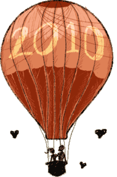
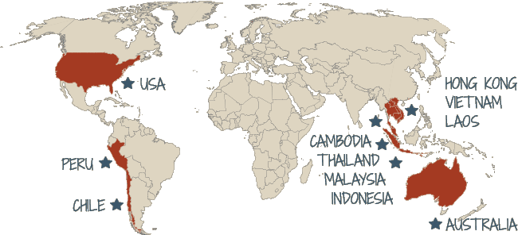

Tim and Daniela – An international love story
I know the story, just give me info about the wedding, please…– Aug. 2007 –
We met in Washington, D.C.
We worked for the same company, and through lunch conversations and afterwork beers a friendship blossomed. Tim took note of the exotic Peruvian graphic designer, but didn't want to mix work with pleasure, so they remained close friends. (Actually, he was just too chicken to ask her out.)
We started dating
After 8 months, it was obvious the spark couldn't be ignored. A pseudodate to Alexandria led to an official date to the National Zoo, which sealed the deal.
But, almost a year later, in 2009
We broke up…
Tim moved to New Zealand
Daniela moved to Peru
… a year later …
They got together again
and decided to give it another try, while traveling the world together as location-independent freelancers.
- 2010 to 2013 -
They happily lived in:
Are you guys crazy? yes
and you can follow our blogs here:
http://sacalapetaca.wordpress.com/
http://timfarley.com/my-travels/ (her's is more complete…)
And on July 27th, 2013
We got engaged!
While traveling in Gili Meno, Lombok, Indonesia.
What now, you wonder? Another adventure? kind of…
We are getting married!
And then we'll settle in the US for a few years.
Date TBA
Our Civil Wedding
We will have a small private ceremony in Pennsylvania, USA (Where Tim's from)
Time & Place of Event TBA